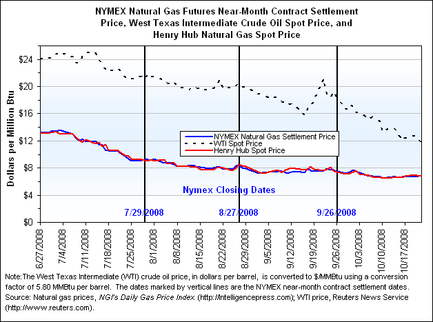
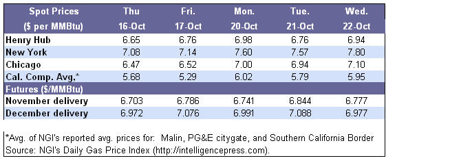
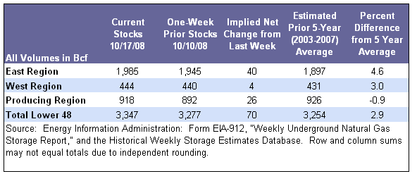

{kind=link}
{kind=link}
Natural Gas
Natural Gas Weekly Update Archive
for week ending October 22, 2008 | Release Date: October 23, 2008
Previous Issues
Next Release: October 30, 2008
| Overview | Prices | Storage | Other Market Trends | Natural Gas Transportation Update |
- Natural gas spot prices in the Lower 48 States this report week increased as a result of cold weather in some major gas consuming areas of the country, several ongoing pipeline maintenance projects, and the continuing production shut-ins in the Gulf of Mexico region.
- At the New York Mercantile Exchange (NYMEX), the price of the near-month contract (November 2008) increased on the week to $6.777 per million British thermal units (MMBtu) as of yesterday (October 22). The net weekly increase occurred during a week in which the price increased in three trading sessions.
- As of Friday, October 17, working gas in underground storage totaled 3,347 Bcf, which is 2.9 percent above the prior 5-year (2003-2007) average.
- The price of crude oil continued its slide this week, registering a steep net weekly decrease for the fourth week in a row. On the week, the price of the West Texas Intermediate (WTI) declined $7.46 per barrel to $66.92 per barrel ($11.54 per MMBtu). Since October 1, the price of crude oil has decreased by $31.31 per barrel or nearly 32 percent.

Virtually all natural gas spot trading locations registered price increases on the week. These increases occurred in response to the arrival of cold weather in many areas of the country. Furthermore, significant price increases in the Southwest and in the Rockies likely were the result of numerous pipeline maintenance projects undertaken this week. Additionally, the slow recovery of the production outages in the producing areas of the Gulf of Mexico provided a further boost to natural gas spot prices. According to the Minerals Management Service (MMS), as of October 21, 2.7 billion cubic feet (Bcf) per day remained shut-in the Federal Gulf of Mexico. With another 0.5 Bcf reported shut-in for the onshore and offshore State waters of Louisiana, more than 3 Bcf per day, or greater than 10 percent of U.S. natural gas production, remains unavailable to domestic markets. The cumulative production shut-ins caused by the recent hurricanes are estimated to be roughly 265 Bcf through yesterday (October 22).
Weather-driven price run-ups in the Northeast and the Midwest ranged between 38 and 95 cents per MMBtu. As of yesterday, the average regional prices in the Northeast and the Midwest were $7.64 and $7.15 per MMBtu, respectively. The largest gains were recorded at trading locations that serve New England, where high temperatures this week reached only into the low 60s and average temperatures are forecasted to be only in the 40s for the remainder of the week ending October 26, according to the National Weather Service. Prices at Tennessee Gas Pipeline Zone 6 and the Algonquin Gas Transmission citygates both rose 82 cents on the week, or about 12 percent per MMBtu. As of yesterday, prices at these two locations reached $7.92 and $7.98 per MMBtu, respectively. Elsewhere in the Northeast, prices in the Transcontinental Gas Pipeline Zone 6, which serves the New York City area, increased by 71 cents, or more than 10 percent, since last Wednesday.
Markets in the Rocky Mountains region recorded significant price increases on the week, with the regional price averaging 71 cents or about 20 percent higher than a week ago. Price increases prevailed across the Rocky Mountains region and other areas constrained by the lack of transportation capacity as a result of maintenance projects. For example, the Cheyenne Hub price increased by more than $1 in Monday’s trading as a result of the maintenance performed at the Thunder Creek meter station in Wyoming. While the price at this location has decreased from this week’s peak, yesterday’s price was 72 cents higher than the week-earlier level. Similarly, the work at El Paso’s Keystone station helped boost prices at the El Paso non-Bondad trading location, which ended the report week $1.27 per MMBtu higher than last Wednesday.
The Henry Hub spot price, along with all points in the Gulf Coast production areas, increased on the week. The Henry Hub price was 30 cents per MMBtu higher, or about 5 percent more than on the previous Wednesday, ending the report week at $6.94. Other trading locations in Louisiana increased between 24 and 39 cents per MMBtu, while locations in East Texas and Alabama/Mississippi recorded gains between 20 and 42 cents per MMBtu. The lowest regional prices on the week occurred once again in the Midcontinent region, where prices averaged $4.40 per MMBtu as of yesterday, despite an average increase of 74 cents per MMBtu on the week. Abundant supplies and high levels of pipeline linepack in this region continue to result in the lowest natural gas prices in the Lower 48 States.

At the NYMEX, the price of the near-month contract (for November delivery) increased $0.185 per MMBtu during the report week to $6.777. This week’s increase was likely the response to cold weather in many high demand areas of the country and uncertainty about weather in the coming winter, and it occurred despite the continued concerns over the economy, growing supplies in storage, and decreasing price of crude oil. Similarly, the price of the December 2008 contract also increased on the week, albeit by only about 9 cents, after it broke the $7-mark twice this report week. The December 2009 contract settled yesterday at $6.977.
The 12-month strip, which is the average price for futures contracts through October 2009, increased 8 cents per MMBtu on the week to $7.193. The highest-priced contract in the 12-month strip was the October 2009 contract, which is somewhat unusual for this time of year, when the January and February contracts typically have the highest prices. However, with the abundant supplies of natural gas in storage and continued reports of ample domestic onshore production, the market concerns over supplies during the coming heating season likely are dissipating, while uncertainty about the following winter persists.

Working gas in storage increased to 3,347 Bcf as of Friday, October 17, 2008, according to EIA’s Weekly Natural Gas Storage Report (see Storage Figure). This report week’s implied net injection of 70 Bcf is higher than both the 5-year average injection of 62 Bcf and last year’s injection of 60 Bcf. As a result, current inventories are now 2.9 percent above the 5-year average level of 3,254 Bcf. The difference between current inventories and levels last year at this time decreased to 2.2 percent. The higher-than-average net injection came during the week ending last Friday, when reduced natural gas demand related to low space cooling and heating demand would have occurred. Natural gas usage for electric power generation likely decreased, as overall electric power output recorded a 1.6-percent drop for the week ended October 18 compared with the year-ago level, according to the Edison Electric Institute. Areas of the country that consume most of the natural gas used for electric power generation, such as South Central, which corresponds roughly to the West South Central Census Division, recorded a 4.3 percent decrease in output compared with the corresponding week of 2007.
The temperatures in the Lower 48 States during the storage report week were moderate for this time of year, as most Census Divisions recorded above-average temperatures. For the week ended October 16, average temperatures were above normal by up to 7 degrees Fahrenheit in the divisions east of the Rocky Mountains (see Temperature Maps and Data). Temperatures in the Mountain and Pacific Divisions were 6.6 and 3.3 degrees below normal, respectively.

EIA Releases Advance Report on 2007 Proved Reserves. The Energy Information Administration (EIA) on October 16, 2008, released a report titled Advance Summary: U.S. Crude Oil, Natural Gas, and Natural Gas Liquids Reserves 2007 Annual Report. According to the report, additions to dry natural gas proved reserves during 2007 reached a record high of 46.1 trillion cubic feet (Tcf), which was twice as much as the 19.5 Tcf of dry natural gas produced in the United States during the year. This was the ninth consecutive year in which U.S. natural gas proved reserves grew. As a result of this increase, total proved reserves of dry natural gas in the United States at the end of 2007 grew to 237.7 Tcf, 13 percent above the year-end 2006 level and the highest level in the 31 years EIA has published annual reserves data. The dry natural gas reserve additions mostly reflected the rapid development of unconventional gas resources including shale, coalbed methane, and tight low-permeability formations. Many of these unconventional resources are now economic to develop because of the application of advanced technologies like horizontal drilling with hydraulic fracturing. Shale proved reserves, in particular, increased by 50 percent in 2007 and now account for about 9 percent of U.S. natural gas proved reserves. This report is an advance summary of EIA's report on domestic proved reserves of crude oil, natural gas, and natural gas liquids. The full report, which is scheduled to be released in December 2008, will contain more comprehensive data.
- Cold weather in the Midwest this week brought about the fall season’s first restrictions for balancing flows on interstate pipelines to maintain operational integrity during periods of increased flows to heating-load customers. Northern Natural Gas Company, for example, on Tuesday, October 21, issued a system overrun limitation (SOL) that allows for penalties on variances between flows and nominations. The SOL is in effect in all market zones on Northern Natural, which extend across Wisconsin, Illinois, and Iowa.
- Southern California Gas Company (SoCal) has restored injection capacity at its Aliso Canyon storage facility in Los Angeles County, California. However, activity at the facility, which had been shutdown on October 13 because of a wildfire threat, will be limited. While SoCal was able to report preliminarily that no damage occurred to any major structures, the company states that withdrawal capacity will remain unavailable. It is not known at this time when the facility will be restored to normal operations. SoCal said injection capacity will be 410 million cubic feet (MMcf) per day. The facility normally has a withdrawal capacity of 1.8 billion (Bcf) per day.
- Tennessee Gas Pipeline Company (Tennessee) on October 22 said it will begin receiving flows from 19 meters on a portion of its Bluewater Header and Bluewater West Leg in the Central Gulf of Mexico. Tennessee was able to return service to these meters following completion of repairs resulting from damage from Hurricane Ike. Specifically, the meters are located between its Vermillion Block 245 platform and in South Marsh Island Block 79.
- El Paso Natural Gas Company announced its Keystone Station in Winkler County, Texas, will be out of service through Saturday, October 25. According to El Paso, the outage is occurring to allow for Department of Transportation inspections and other annual maintenance. Capacity through the station is normally about 785 MMcf per day. At least partial re-routing of natural gas flows will be available during the week.
See Weekly Natural Gas Storage Report for additional Natural Gas Storage Data.
See Natural Gas Analysis for additional Natural Gas Reports and Articles.
See Short-Term Energy Outlook for additional Natural Gas Prices, Supply, and Demand.